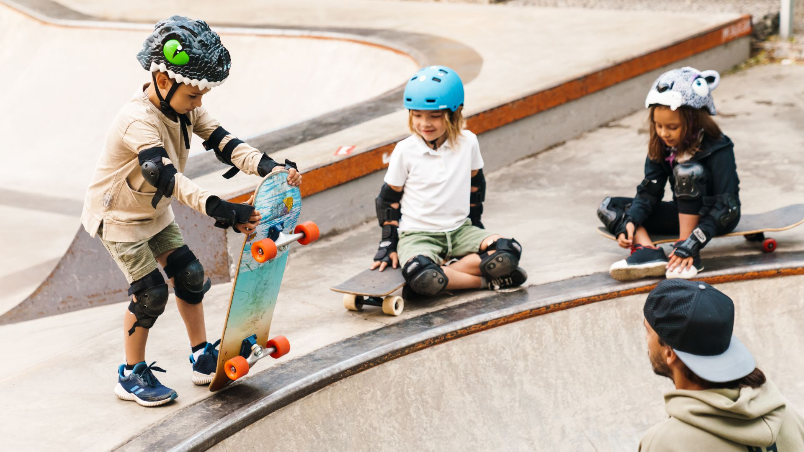
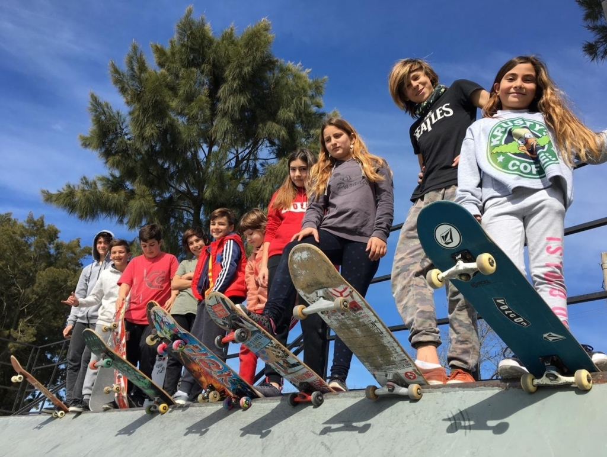
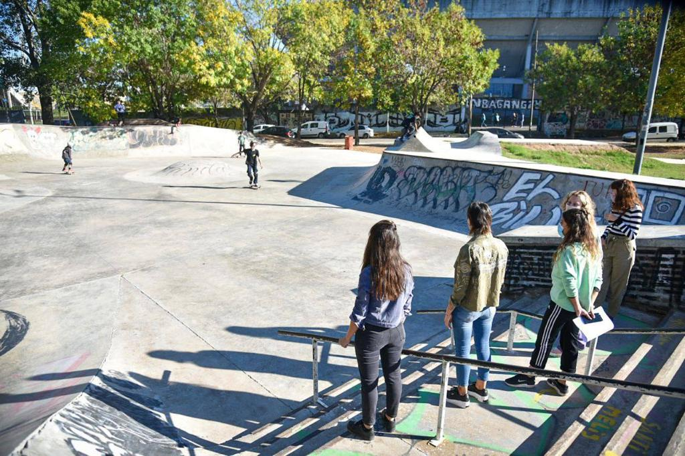

Impulso Skate
Un espacio para amistades y crecimiento a través del skate
Sobre Nosotros
Impulso Skate es una ONG que busca acercar el skateboarding a la comunidad de Quilmes mediante espacios, actividades y proyectos accesibles e inclusivos. Nuestro objetivo es brindarles a jóvenes y adolescentes la oportunidad de aprender, practicar y disfrutar de este deporte, sin importar su nivel de experiencia o sus posibilidades económicas. Buscamos fomentar valores como el respeto, el compañerismo, la igualdad y la superación personal, generando un entorno donde cada persona pueda expresarse libremente, desarrollar sus habilidades y formar parte de una comunidad. A través de talleres, encuentros y actividades recreativas, queremos promover el uso positivo del tiempo libre, fortalecer los vínculos entre los jóvenes y contribuir al desarrollo de espacios seguros donde el skateboarding sea una herramienta de inclusión social, expresión y crecimiento personal.


Espacio para aprender juntos!